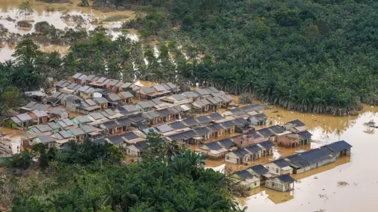
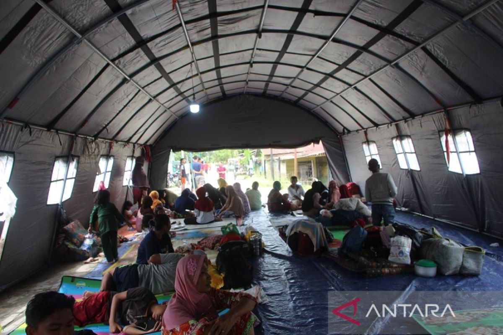
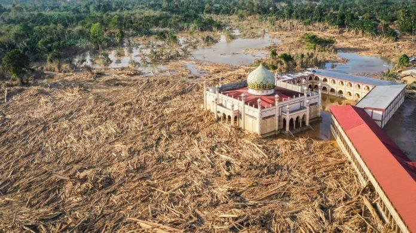
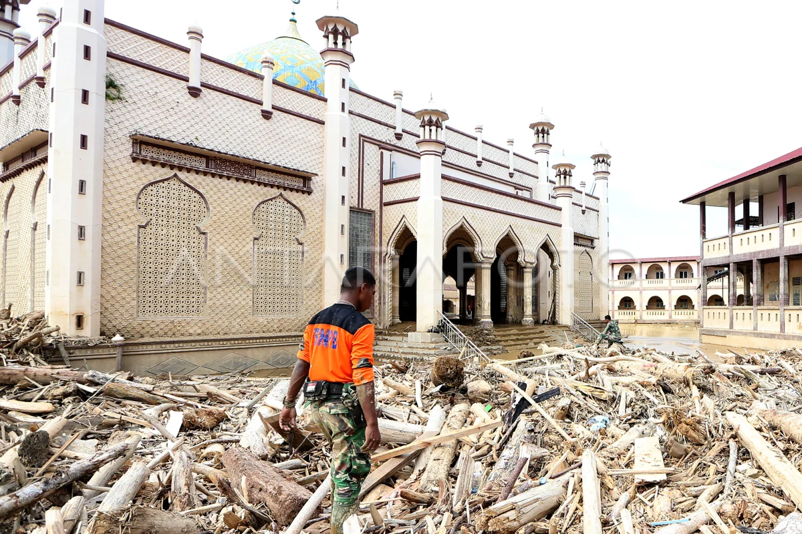
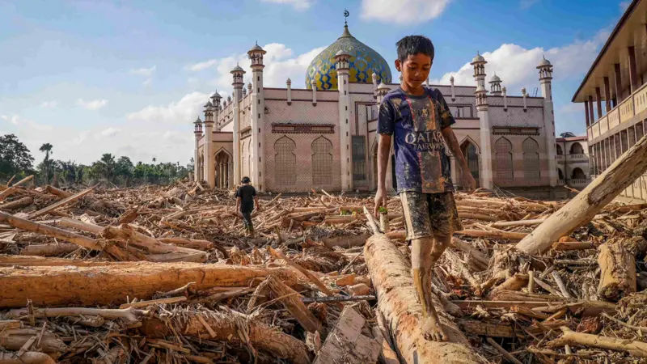

Hujan ekstrem di kawasan Gunung Leuser memicu luapan Sungai Tamiang. Seluruh 12 kecamatan terendam. 291.925 jiwa terdampak, akses jalan nasional lumpuh total.

Periode: Desember 2025 — Januari 2026
Ketinggian Air
Hulu vs Perkotaan (meter)
Pengungsi per Periode
Jumlah di posko (jiwa)
Dampak per Kecamatan
Estimasi jiwa terdampak
Kebutuhan Mendesak
Prioritas saat ini
Status Logistik
Fase pemulihan — Januari 2026
| Item | Status | Catatan |
|---|---|---|
| Beras & Mie Instan | Surplus | Tercukupi |
| Susu Bayi | Terbatas | Masih dibutuhkan |
| Popok Bayi & Dewasa | Terbatas | Masih dibutuhkan |
| Air Bersih | Sangat Mendesak | Sumur tercemar (hilir) |
| Alat Pembersih | Kurang | Karbol, sapu, sekop |
| Perlengkapan Sekolah | Kurang | Buku, seragam rusak |
| Obat Kulit & ISPA | Kurang | Pasca-banjir meningkat |
Scroll untuk mengikuti perjalanan bencana dari awal hingga pemulihan.
24 Desember 2025
02:00 WIB
Hujan dengan intensitas sangat tinggi melanda wilayah pegunungan hulu di kawasan Taman Nasional Gunung Leuser.
04:30 WIB
Debit air Sungai Tamiang naik drastis. Air mulai masuk ke pemukiman di Tamiang Hulu dan Bandar Pusaka. Warga mengevakuasi barang ke tempat tinggi.
25 — 27 Desember 2025
25 Desember
Banjir kiriman sampai ke wilayah tengah. Karang Baru dan Kota Kualasimpang mulai terendam (50 cm — 1 meter).
26 Desember
Akses jalan nasional Medan — Banda Aceh di Bukit Seumadam lumpuh total. Kendaraan terjebak macet puluhan km. Listrik dipadamkan di beberapa titik.
27 Desember — Puncak Banjir
Seluruh 12 kecamatan terendam. Ketinggian air di hulu mencapai plafon rumah (±2,5 meter). Ratusan ribu warga dievakuasi ke 513 titik pengungsian. 101 orang meninggal dunia, 23 orang dinyatakan hilang.
28 — 31 Desember 2025
28 — 31 Desember
Air surut di hulu, namun menumpuk di hilir (Seruway & Bendahara). Surut terhambat pasang air laut (rob). Logistik disalurkan via udara.
01 — 05 Januari 2026
01 — 05 Januari
Air surut menyisakan lumpur tebal. Warga kembali bertahap. Tim medis intensif karena penyakit kulit dan ISPA di posko.
Pasca 10 Januari 2026
10 Januari
Pembersihan massal serentak oleh warga dan relawan di seluruh kecamatan.
15 Januari
Tanggap darurat resmi ditutup. Fokus ke perbaikan infrastruktur, pembersihan fasilitas pendidikan, dan pendataan kerugian sektor pertanian. 6.052 jiwa (707 KK) masih di 513 titik posko transisi.
Data dihimpun dari laporan Pusdalops BPBD Aceh Tamiang dan pantauan relawan lapangan.
Aceh Tamiang bukan kali pertama dilanda banjir bandang. Berikut faktor-faktor strukturalnya.
Deforestasi Hulu
Kawasan hulu Sungai Tamiang berada di zona Taman Nasional Gunung Leuser. Alih fungsi lahan dan deforestasi ilegal mengurangi kemampuan hutan menyerap air. Hujan tinggi langsung menjadi limpasan permukaan.
Sedimentasi Sungai
Sungai Tamiang mengalami pendangkalan akut akibat erosi dari hulu. Material sedimen menyumbat aluran, sungai tidak mampu menampung debit air saat hujan ekstrem.
Faktor Cuaca Global
Kejadian bertepatan dengan anomali La Niña yang meningkatkan curah hujan di Indonesia bagian barat. BMKG mencatat curah hujan 3x lebih tinggi dari normal pada Desember 2025.
Catatan: Banjir besar serupa terjadi pada 2006, 2012, 2020, dan 2024. Pola berulang ini menandakan perlunya solusi struktural jangka panjang.
Update April 2026: Pemkab mengalokasikan Rp192 miliar untuk revitalisasi 254 sekolah terdampak. Pembangunan jembatan darurat terus diupayakan di Kampung Bundar dan Sekerak untuk memulihkan akses ekonomi warga.
Data dari laporan lapangan
BPBD Aceh Tamiang
Seluruh personel. Evakuasi warga dan koordinasi posko pengungsian.
TNI / Polri
Pembersihan fasilitas umum dan distribusi logistik jalur udara ke desa terisolir.
Tagana & Dinsos
Mengelola dapur umum utama di Karang Baru melayani ribuan pengungsi.
BASARNAS
Pencarian korban hanyut dan evakuasi warga di lokasi terisolir.
Rumah Zakat
Layanan medis, dukungan psikososial anak, dan distribusi sembako.
Lazismu
Dukungan medis, psikososial, dan paket kebutuhan darurat.
Dompet Dhuafa
Layanan kesehatan gratis, sembako, kebersihan, dan pemulihan psikologis.
Kutipan dari warga terdampak dan relawan di lapangan.
"Air naik begitu cepat jam 4 pagi. Kami cuma sempat bawa anak dan dokumen penting. Semua perabotan hilang dalam semalam."
Ibu S. — Tamiang Hulu
Des 2025
"Yang paling berat bukan saat banjir, tapi setelahnya. Rumah penuh lumpur, anak-anak takut kalau hujan turun. Kami butuh air bersih lebih dari apa pun."
Bapak R. — Bendahara
Jan 2026
"Akses jalan putus total tiga hari. Kami distribusi logistik pakai perahu karet. Di beberapa desa, cuma helikopter yang bisa masuk."
Relawan Tagana
Des 2025
"Anak-anak di posko banyak trauma. Mereka menangis kalau hujan turun sedikit saja. Kami adakan pendampingan psikososial setiap hari."
Tim Psikososial
Jan 2026




Informasi praktis bagi warga yang sedang memulihkan diri.
Elektronik Terendam
Dokumen Rusak/Hilang
Penyakit yang Diwaspadai
Donasi Dana
Transfer ke rekening resmi Aceh Tamiang Peduli via Bank Aceh Syariah.
Bank Aceh Syariah
Cek website resmi Pemkab
a.n. Aceh Tamiang Peduli
⚠ Verifikasi nomor rekening di website resmi.
Donasi Barang
Drop point: Posko Utama Aula Kantor Bupati, Karang Baru.
Jadi Relawan
Daftar melalui sekretariat resmi.
Posko Utama
Aula Kantor Bupati, Karang Baru
Pendaftaran
Sekretariat BPBD / Tagana
Transparansi Donasi
Jika kamu membuka penyaluran bantuan mandiri, wajib isi tabel ini secara berkala.
| Tanggal | Donatur | Jumlah | Jenis | Disalurkan Ke |
|---|---|---|---|---|
| — | Belum ada data | — | — | — |
| — | Belum ada data | — | — | — |
Contoh — isi dengan data real jika mengelola donasi mandiri.
Peringatan Penipuan
Jangan transfer ke nomor rekening pribadi. Gunakan kanal resmi dari lembaga terverifikasi. Laporkan aktivitas mencurigakan ke 112.
(0641) 332910
BPBD Aceh Tamiang
112
Emergency Call
(0641) 426466 atau 0811-6712-115
SAR Aceh
123 (Atau melalui HP: (0641) 123)
PLN Gangguan